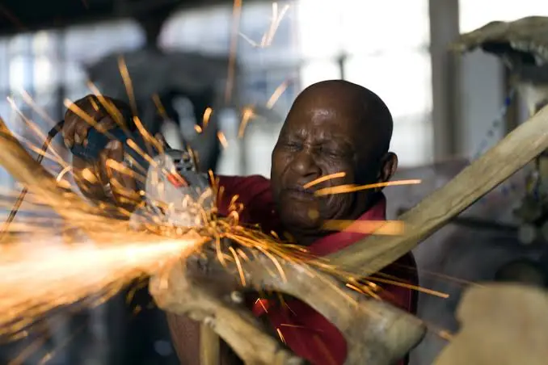

Professor Pitika Ntuli
An internationally acclaimed South African sculptor, poet, philosopher, and educator whose practice explores African spirituality, identity, and the enduring legacy of colonialism. Working across bone, bronze, metal, stone, and wood, he is the intellectual anchor of the Foundation, guiding its work through the philosophy of UBuSuSu.
Antoinette Ntuli
A writer, poet, and cultural producer whose forty-year collaboration with Professor Ntuli has shaped their shared artistic, intellectual, and spiritual journey. A committed social justice practitioner, she serves as custodian of the Foundation’s living archive, transmitting knowledge across generations.
Ruzy Rusike
A curator, researcher, and arts leader engaging African modernism, heritage, and museum futures, and Director of the Southern African Foundation for Contemporary Art.
Viwe Mgedezi
A knowledge management executive and researcher interrogating Western-oriented knowledge frameworks: recovering what risks being lost between generations.